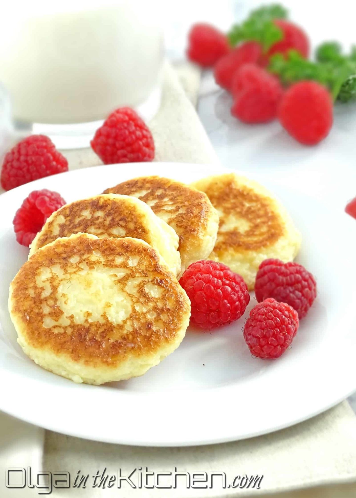

Cheese Pancakes

Description
Farmer’s Cheese Pancakes (sirniki): easy to make, slightly sweet, fluffy, bite-size delicious goodness for breakfast. They puff up as soon as you place them onto skillet and get eaten as soon as you take them off the skillet.
See full recipe here: Olga in the Kitchen
Ingredients
- All-purpose flour (I use Bob’s Red Mill)
- Cream cheese
- Large egg
- Cool whip – optional for extra flavor
- Granulated sugar
- Baking powder
- Vanilla extract
- Fine salt
- Grapeseed oil to fry (vegetable ok too)
- 2 cups Farmer's Cheese
Directions
- Measure 2 cups of farmer’s cheese by crumbling cheese by hands and lightly placing into a measuring cup (don’t try to pack it). Transfer cheese into a medium bowl and break any bigger pieces with fork. Add 2 oz cream cheese, 4 tbsps cool whip, 1/4 tsp vanilla extract and 1 large egg; mix it/break it with fork and then finish with spatula until well combined.
- In a separate small bowl, combine and whisk together: 1/4 cup all-purpose flour, 1/3 cup sugar, 1/2 tsp baking powder and 1/4 tsp salt. Add dry ingredients to cheese and with help of spatula, stir together until everything is fully combined. Batter will be sticky, but not runny (if too runny, add 1-2 tbsps flour).
- Heat a large non-stick pan over medium-low heat and drizzle about 2-3 tbsps oil. While pan is heating, use a small ice cream scoop to make small cheese balls and place onto a cutting board covered with a plastic food wrap. Once pan is heated, flatten each cheese ball on your palm to about 1/2″ thickness and place onto the pan (if batter starts sticking to hands, dip hands into flour or wipe with oil). Saute in hot oil over medium-low heat about 2-3 mins per side. Flip over when starting to golden on bottom-side edges. Transfer to a platter and serve warm with your favorite topping such as sour cream, jam and fresh fruits, with a glass of an orange juice or milk. Enjoy!
Nutrition Facts
Unknown.